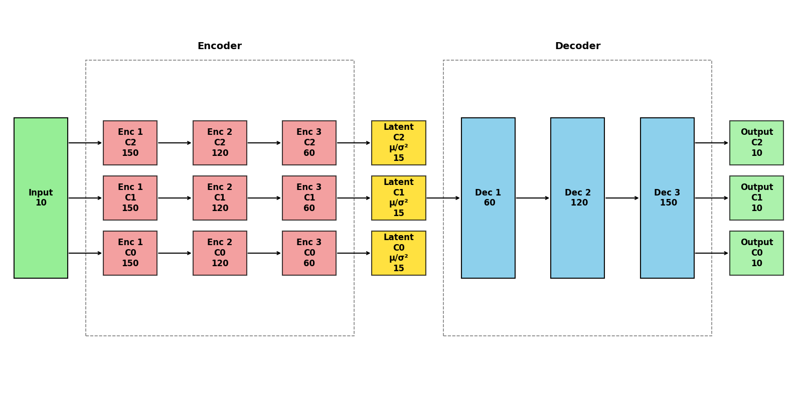

Handling binary data columns
The CISS-VAE model can handle binary and categorical variables in addition to continuous ones. Categorical variables must be represented with binary dummy variables (pandas get_dummies can do this) and the new dummy variables must be linked back to the original categorical label by passing a dictionary via categorical_column_map.
When imputing binary data, the model applies a sigmoid activation function at the end of the forward pass to convert to a probability (this means that the end imputed result is the probability that the imputed value should be 1. The user will need to change these values after running).
Because some datasets have both binary and continuous variables, you can include a binary variable mask (boolean vector) to tell the model which variables are binary so it acts accordingly.
Example dataset
The example dataset below has both binary and continuous variables in it:
import pandas as pd
import numpy as np
np.random.seed(42)
n_rows = 100
prop_mask = 0.3
X = pd.DataFrame({
"feat1": np.random.choice(np.arange(1, n_rows + 1), size=n_rows, replace=True),
"feat2": np.random.choice(np.arange(1, 6), size=n_rows, replace=True),
"feat3": np.random.choice(np.arange(1, 8), size=n_rows, replace=True),
"feat4": np.random.choice(np.arange(1, 8), size=n_rows, replace=True),
"feat5": np.random.choice(np.arange(1, 8), size=n_rows, replace=True),
## now add some binary features
"bf1": np.random.binomial(1, 0.25, size=n_rows),
"bf2": np.random.binomial(1, 0.5, size=n_rows),
"bf3": np.random.binomial(1, 0.75, size=n_rows),
"bf4": np.random.binomial(1, 0.33, size=n_rows),
"bf5": np.random.binomial(1, 0.66, size=n_rows),
})
X_raw = X.copy()
for col in X.columns[1:]: # skip feat1
idx = np.where(~X[col].isna())[0] # indices of non-NA entries
n_mask = int(np.ceil(len(idx) * prop_mask))
if n_mask > 0:
mask_idx = np.random.choice(idx, size=n_mask, replace=False)
X.loc[mask_idx, col] = np.nan
print(f"X matrix:\n{X}")
## choosing random clusters for now
clusters = np.random.choice([1, 2, 3], size=n_rows, replace=True)
X matrix:
feat1 feat2 feat3 feat4 feat5 bf1 bf2 bf3 bf4 bf5
0 52 2.0 6.0 4.0 2.0 NaN NaN NaN NaN 0.0
1 93 1.0 7.0 NaN 2.0 NaN 1.0 1.0 1.0 1.0
2 15 4.0 NaN 4.0 2.0 0.0 0.0 1.0 0.0 NaN
3 72 4.0 3.0 NaN 1.0 NaN 1.0 NaN 1.0 NaN
4 61 NaN 1.0 NaN 1.0 0.0 NaN NaN NaN 0.0
.. ... ... ... ... ... ... ... ... ... ...
95 85 NaN NaN 6.0 2.0 0.0 0.0 1.0 NaN 1.0
96 80 1.0 NaN 7.0 2.0 0.0 NaN 1.0 NaN 1.0
97 82 2.0 4.0 NaN 1.0 0.0 NaN 1.0 NaN NaN
98 53 4.0 3.0 7.0 7.0 NaN 0.0 0.0 0.0 1.0
99 24 4.0 1.0 3.0 NaN 0.0 1.0 1.0 1.0 0.0
[100 rows x 10 columns]
Preparing Binary Vector
The binary vector binary_feature_mask is of length p for an n x p data matrix and is True for binary columns and False for continuous columns.
binary_vector = [False, False, False, False, False, True, True, True, True, True]
Using run_cissvae() with binary matrix
Pass the binary vector to the run_cissvae() function using the binary_feature_mask argument. Note: even if columns are ignored via columns_ignore, those columns must be accounted for in the binary_feature_mask.
import ciss_vae
from ciss_vae.training.run_cissvae import run_cissvae
from ciss_vae.utils.helpers import plot_vae_architecture
print(ciss_vae.__file__)
imputed_data, vae, ds, history = run_cissvae(data = X,
## Dataset params
columns_ignore = X.columns[0], ## columns to ignore when selecting validation dataset (and clustering if you do not provide clusters). For example, demographic columns with no missingness.
clusters = clusters,
print_dataset = False,
binary_feature_mask = binary_vector,
## VAE model params
hidden_dims = [150, 120, 60], ## Dimensions of hidden layers, in order. One number per layer.
latent_dim = 15, ## Dimensions of latent embedding
layer_order_enc = ["unshared", "unshared", "unshared"], ## order of shared vs unshared layers for encode (can use u or s instead of unshared, shared)
layer_order_dec=["shared", "shared", "shared"], ## order of shared vs unshared layers for decode
latent_shared=False,
output_shared=False,
batch_size = 4000, ## batch size for data loader
return_model = True, ## if true, outputs imputed dataset and model, otherwise just outputs imputed dataset. Set to true to return model for `plot_vae_architecture`
## Initial Training params
epochs = 5, ## default
## Other params
return_history = True, ## if true, will return training MSE history as pandas dataframe
return_dataset=True
)
print(f"The successfully imputed dataset:\n{imputed_data.head(3)}\n\n")
\\VPensBST\BstShared\Biostatistics\Danielle\Repos\CISS_VAE\CISS-VAE-python\src\ciss_vae\__init__.py
The successfully imputed dataset:
feat1 feat2 feat3 feat4 feat5 bf1 bf2 bf3 \
0 52.0 2.0 6.00000 4.000000 2.0 0.302485 0.404743 0.636127
1 93.0 1.0 7.00000 4.189552 2.0 0.110679 1.000000 1.000000
2 15.0 4.0 3.44211 4.000000 2.0 0.000000 0.000000 1.000000
bf4 bf5
0 0.443553 0.00000
1 1.000000 1.00000
2 0.000000 0.57127
Now that we have an imputed dataset, we need to convert the probabilities to true binary values.
bf_cols = [col for col in imputed_data.columns if col.startswith('bf')]
imputed_data[bf_cols] = (imputed_data[bf_cols] > 0.5).astype(int)
print(f"The successfully imputed dataset:\n{imputed_data.head(3)}\n\n")
The successfully imputed dataset:
feat1 feat2 feat3 feat4 feat5 bf1 bf2 bf3 bf4 bf5
0 52.0 2.0 6.00000 4.000000 2.0 0 0 1 0 0
1 93.0 1.0 7.00000 4.189552 2.0 0 1 1 1 1
2 15.0 4.0 3.44211 4.000000 2.0 0 0 1 0 1
print(f"History \n{history}")
History
epoch train_loss train_mse train_bce train_ce imputation_error \
0 0 6.945113 347.701630 346.802612 0.0 320.539062
1 1 6.810024 340.168030 340.817749 0.0 344.425415
2 2 6.712993 339.692535 331.558289 0.0 345.298767
3 3 6.597640 334.835938 324.817261 0.0 334.807343
4 4 6.465297 325.737579 320.526825 0.0 337.141022
5 4 NaN NaN NaN NaN 347.181915
6 9 NaN NaN NaN NaN 271.728943
7 0 5.920253 281.688995 309.766754 0.0 NaN
8 1 6.260298 318.909790 306.554749 0.0 NaN
9 2 5.865682 278.205566 307.714355 0.0 NaN
10 3 5.694291 265.898407 302.624420 0.0 NaN
11 4 5.658046 259.660370 305.226379 0.0 NaN
12 14 NaN NaN NaN NaN 377.688629
13 0 5.380131 233.666336 303.406342 0.0 NaN
14 1 9.380676 620.381714 315.344940 0.0 NaN
15 2 5.336485 226.872391 305.304321 0.0 NaN
16 3 5.540195 241.228027 311.292175 0.0 NaN
17 4 5.593123 246.618195 310.927979 0.0 NaN
18 19 NaN NaN NaN NaN 370.147614
19 0 5.478112 237.671204 307.676208 0.0 NaN
20 1 5.940436 279.735870 311.661987 0.0 NaN
21 2 5.405255 234.999435 302.320129 0.0 NaN
22 3 5.558175 249.377594 302.137451 0.0 NaN
23 4 4.837627 180.613281 298.911987 0.0 NaN
val_mse val_bce val_ce lr phase loop
0 319.861664 0.677406 0.0 0.010000 NaN NaN
1 343.775421 0.649993 0.0 0.009990 NaN NaN
2 344.682617 0.616162 0.0 0.009980 NaN NaN
3 334.233856 0.573492 0.0 0.009970 NaN NaN
4 336.607391 0.533642 0.0 0.009960 NaN NaN
5 346.653839 0.528070 0.0 0.009950 refit 0.0
6 271.148407 0.580540 0.0 0.009900 refit 1.0
7 NaN NaN NaN 0.009950 refit_training NaN
8 NaN NaN NaN 0.009940 refit_training NaN
9 NaN NaN NaN 0.009930 refit_training NaN
10 NaN NaN NaN 0.009920 refit_training NaN
11 NaN NaN NaN 0.009910 refit_training NaN
12 377.069336 0.619285 0.0 0.009851 refit 2.0
13 NaN NaN NaN 0.009900 refit_training NaN
14 NaN NaN NaN 0.009891 refit_training NaN
15 NaN NaN NaN 0.009881 refit_training NaN
16 NaN NaN NaN 0.009871 refit_training NaN
17 NaN NaN NaN 0.009861 refit_training NaN
18 369.551239 0.596373 0.0 0.009802 refit 3.0
19 NaN NaN NaN 0.009851 refit_training NaN
20 NaN NaN NaN 0.009841 refit_training NaN
21 NaN NaN NaN 0.009831 refit_training NaN
22 NaN NaN NaN 0.009822 refit_training NaN
23 NaN NaN NaN 0.009812 refit_training NaN
As always, the vae architecture can be printed.
plot_vae_architecture(model = vae,
title = None, ## Set title of plot
## Colors below are default
color_shared = "skyblue",
color_unshared ="lightcoral",
color_latent = "gold", # xx fix
color_input = "lightgreen",
color_output = "lightgreen",
figsize=(16, 8),
return_fig = False)

Using Binary Feature Mask with Autotune
To use a binary_feature_mask with autotune(), pass the use the binary_feature_mask parameter when initializing the ClusterDataset object.
from ciss_vae.classes.cluster_dataset import ClusterDataset
from ciss_vae.training.autotune import autotune, SearchSpace
cd = ClusterDataset(
X, cluster_labels = clusters, binary_feature_mask=binary_vector
)
ss = SearchSpace(
num_hidden_layers = [1, 2],
hidden_dims = [6, 16, 32],
latent_dim=10,
latent_shared=True,
output_shared = True,
lr = 0.01,
decay_factor=0.999,
num_epochs = 100,
num_shared_encode = 1,
num_shared_decode = 1,
epochs_per_loop=100,
reset_lr_refit=False
)
autotune(search_space = ss, train_dataset = cd, optuna_dashboard_db = "sqlite:///optuna_study_test_binary.db", debug = False)
[Warning] CUDA requested but not available. Falling back to CPU.
[I 2026-04-01 09:56:56,124] Using an existing study with name 'vae_autotune' instead of creating a new one.
\\VPensBST\BstShared\Biostatistics\Danielle\Repos\CISS_VAE\CISS-VAE-python\src\ciss_vae\training\autotune.py:652: ExperimentalWarning: optuna.study.study.Study.set_metric_names is experimental (supported from v3.2.0). The interface can change in the future.
study.set_metric_names(["Total Imputation Error"])
Starting Optuna optimization with 20 trials...
[I 2026-04-01 09:57:11,614] Trial 23 finished with value: {'Total Imputation Error': 280.91204833984375} and parameters: {'num_hidden_layers': 2, 'hidden_dim_0': 32, 'hidden_dim_1': 16, 'encoder_shared_placement': 'at_end', 'decoder_shared_placement': 'at_start'}. Best is trial 21 with value: 202.40597534179688.
[I 2026-04-01 09:57:25,087] Trial 24 finished with value: {'Total Imputation Error': 213.1970672607422} and parameters: {'num_hidden_layers': 2, 'hidden_dim_0': 32, 'hidden_dim_1': 16, 'encoder_shared_placement': 'at_end', 'decoder_shared_placement': 'at_start'}. Best is trial 21 with value: 202.40597534179688.
[I 2026-04-01 09:57:38,223] Trial 25 finished with value: {'Total Imputation Error': 313.8942565917969} and parameters: {'num_hidden_layers': 2, 'hidden_dim_0': 32, 'hidden_dim_1': 16, 'encoder_shared_placement': 'at_end', 'decoder_shared_placement': 'at_start'}. Best is trial 21 with value: 202.40597534179688.
[I 2026-04-01 09:57:48,507] Trial 26 finished with value: {'Total Imputation Error': 378.0359191894531} and parameters: {'num_hidden_layers': 2, 'hidden_dim_0': 32, 'hidden_dim_1': 16, 'encoder_shared_placement': 'at_end', 'decoder_shared_placement': 'at_end'}. Best is trial 21 with value: 202.40597534179688.
[I 2026-04-01 09:57:58,126] Trial 27 finished with value: {'Total Imputation Error': 291.3521423339844} and parameters: {'num_hidden_layers': 1, 'hidden_dim_0': 32, 'encoder_shared_placement': 'at_start', 'decoder_shared_placement': 'at_start'}. Best is trial 21 with value: 202.40597534179688.
[I 2026-04-01 09:58:08,416] Trial 28 finished with value: {'Total Imputation Error': 270.27435302734375} and parameters: {'num_hidden_layers': 2, 'hidden_dim_0': 32, 'hidden_dim_1': 16, 'encoder_shared_placement': 'alternating', 'decoder_shared_placement': 'at_start'}. Best is trial 21 with value: 202.40597534179688.
[I 2026-04-01 09:58:19,106] Trial 29 finished with value: {'Total Imputation Error': 256.9208068847656} and parameters: {'num_hidden_layers': 2, 'hidden_dim_0': 16, 'hidden_dim_1': 16, 'encoder_shared_placement': 'at_end', 'decoder_shared_placement': 'at_end'}. Best is trial 21 with value: 202.40597534179688.
[I 2026-04-01 09:58:30,824] Trial 30 finished with value: {'Total Imputation Error': 278.3486633300781} and parameters: {'num_hidden_layers': 2, 'hidden_dim_0': 32, 'hidden_dim_1': 16, 'encoder_shared_placement': 'random', 'decoder_shared_placement': 'at_end'}. Best is trial 21 with value: 202.40597534179688.
[I 2026-04-01 09:58:41,303] Trial 31 finished with value: {'Total Imputation Error': 318.2501220703125} and parameters: {'num_hidden_layers': 2, 'hidden_dim_0': 6, 'hidden_dim_1': 6, 'encoder_shared_placement': 'at_start', 'decoder_shared_placement': 'random'}. Best is trial 21 with value: 202.40597534179688.
[I 2026-04-01 09:58:55,522] Trial 32 finished with value: {'Total Imputation Error': 193.67373657226562} and parameters: {'num_hidden_layers': 2, 'hidden_dim_0': 32, 'hidden_dim_1': 16, 'encoder_shared_placement': 'at_end', 'decoder_shared_placement': 'at_start'}. Best is trial 32 with value: 193.67373657226562.
[I 2026-04-01 09:59:06,457] Trial 33 finished with value: {'Total Imputation Error': 323.4795837402344} and parameters: {'num_hidden_layers': 2, 'hidden_dim_0': 32, 'hidden_dim_1': 16, 'encoder_shared_placement': 'at_end', 'decoder_shared_placement': 'at_start'}. Best is trial 32 with value: 193.67373657226562.
[I 2026-04-01 09:59:30,637] Trial 34 finished with value: {'Total Imputation Error': 148.54522705078125} and parameters: {'num_hidden_layers': 2, 'hidden_dim_0': 32, 'hidden_dim_1': 16, 'encoder_shared_placement': 'at_end', 'decoder_shared_placement': 'at_start'}. Best is trial 34 with value: 148.54522705078125.
[I 2026-04-01 09:59:41,609] Trial 35 finished with value: {'Total Imputation Error': 252.63011169433594} and parameters: {'num_hidden_layers': 2, 'hidden_dim_0': 32, 'hidden_dim_1': 16, 'encoder_shared_placement': 'at_end', 'decoder_shared_placement': 'at_start'}. Best is trial 34 with value: 148.54522705078125.
[I 2026-04-01 09:59:52,709] Trial 36 finished with value: {'Total Imputation Error': 261.8629150390625} and parameters: {'num_hidden_layers': 2, 'hidden_dim_0': 32, 'hidden_dim_1': 16, 'encoder_shared_placement': 'at_end', 'decoder_shared_placement': 'at_start'}. Best is trial 34 with value: 148.54522705078125.
[I 2026-04-01 10:00:03,830] Trial 37 finished with value: {'Total Imputation Error': 402.05194091796875} and parameters: {'num_hidden_layers': 2, 'hidden_dim_0': 6, 'hidden_dim_1': 16, 'encoder_shared_placement': 'random', 'decoder_shared_placement': 'at_start'}. Best is trial 34 with value: 148.54522705078125.
[I 2026-04-01 10:00:10,947] Trial 38 finished with value: {'Total Imputation Error': 293.0616760253906} and parameters: {'num_hidden_layers': 1, 'hidden_dim_0': 32, 'encoder_shared_placement': 'alternating', 'decoder_shared_placement': 'at_start'}. Best is trial 34 with value: 148.54522705078125.
[I 2026-04-01 10:00:19,768] Trial 39 finished with value: {'Total Imputation Error': 280.6060485839844} and parameters: {'num_hidden_layers': 2, 'hidden_dim_0': 32, 'hidden_dim_1': 16, 'encoder_shared_placement': 'at_start', 'decoder_shared_placement': 'at_start'}. Best is trial 34 with value: 148.54522705078125.
[I 2026-04-01 10:00:29,228] Trial 40 finished with value: {'Total Imputation Error': 208.51077270507812} and parameters: {'num_hidden_layers': 2, 'hidden_dim_0': 16, 'hidden_dim_1': 32, 'encoder_shared_placement': 'at_end', 'decoder_shared_placement': 'at_start'}. Best is trial 34 with value: 148.54522705078125.
[I 2026-04-01 10:00:37,311] Trial 41 finished with value: {'Total Imputation Error': 421.8951416015625} and parameters: {'num_hidden_layers': 2, 'hidden_dim_0': 6, 'hidden_dim_1': 16, 'encoder_shared_placement': 'random', 'decoder_shared_placement': 'random'}. Best is trial 34 with value: 148.54522705078125.
[I 2026-04-01 10:00:44,687] Trial 42 finished with value: {'Total Imputation Error': 282.4975280761719} and parameters: {'num_hidden_layers': 2, 'hidden_dim_0': 16, 'hidden_dim_1': 32, 'encoder_shared_placement': 'at_end', 'decoder_shared_placement': 'at_start'}. Best is trial 34 with value: 148.54522705078125.
Optimization complete. Best trial: 34 (Total Imputation Error: 148.545227)
Training final model with best parameters...
Final model training complete.
( feat1 feat2 feat3 feat4 feat5 bf1 bf2 \
0 52.0 2.000000 6.000000 4.000000 2.000000 0.603871 0.159842
1 93.0 1.000000 7.000000 -0.439109 2.000000 0.000002 1.000000
2 15.0 4.000000 3.687330 4.000000 2.000000 0.000000 0.000000
3 72.0 4.000000 3.000000 3.249043 1.000000 0.004010 1.000000
4 61.0 2.255670 1.000000 2.768236 1.000000 0.000000 0.018236
.. ... ... ... ... ... ... ...
95 85.0 0.962307 3.369231 6.000000 2.000000 0.000000 0.000000
96 80.0 1.000000 3.238206 7.000000 2.000000 0.000000 0.000018
97 82.0 2.000000 4.000000 6.498518 1.000000 0.000000 0.000099
98 53.0 4.000000 3.000000 7.000000 7.000000 0.000504 0.000000
99 24.0 4.000000 1.000000 3.000000 2.768066 0.000000 1.000000
bf3 bf4 bf5
0 0.517981 2.188087e-02 0.000000
1 1.000000 1.000000e+00 1.000000
2 1.000000 0.000000e+00 0.966626
3 1.000000 1.000000e+00 0.999973
4 0.761495 1.825549e-01 0.000000
.. ... ... ...
95 1.000000 8.229457e-10 1.000000
96 1.000000 5.805393e-11 1.000000
97 1.000000 4.715938e-10 0.994726
98 0.000000 0.000000e+00 1.000000
99 1.000000 1.000000e+00 0.000000
[100 rows x 10 columns],
CISSVAE(input_dim=10, latent_dim=10, latent_shared=True, output_shared=True,num_clusters=3)
Encoder Layers:
[0] UNSHARED 10 → 32
[1] SHARED 32 → 16
Latent Layer:
SHARED 16 → 10
Decoder Layers:
[0] SHARED 10 → 16
[1] UNSHARED 16 → 32
Final Output Layer:
SHARED 32 → 10,
<optuna.study.study.Study at 0x2af125bf1c0>,
trial_number imputation_error num_hidden_layers hidden_dim_0 \
0 0 471.357300 2 6
1 1 281.187469 2 32
2 2 335.337006 2 6
3 3 294.416748 1 6
4 4 208.593140 2 32
5 5 290.728394 2 16
6 6 352.566742 2 16
7 7 316.873352 2 16
8 8 342.178864 2 6
9 9 355.935516 2 6
10 10 322.344818 1 32
11 11 325.406799 1 32
12 12 353.754150 2 32
13 13 376.329926 2 32
14 14 317.611389 1 32
15 15 319.031525 2 32
16 16 384.458893 2 32
17 17 204.753601 2 32
18 18 313.878571 1 32
19 19 248.689560 2 32
20 20 359.694733 2 16
21 21 202.405975 2 32
22 22 NaN 2 32
23 23 280.912048 2 32
24 24 213.197067 2 32
25 25 313.894257 2 32
26 26 378.035919 2 32
27 27 291.352142 1 32
28 28 270.274353 2 32
29 29 256.920807 2 16
30 30 278.348663 2 32
31 31 318.250122 2 6
32 32 193.673737 2 32
33 33 323.479584 2 32
34 34 148.545227 2 32
35 35 252.630112 2 32
36 36 261.862915 2 32
37 37 402.051941 2 6
38 38 293.061676 1 32
39 39 280.606049 2 32
40 40 208.510773 2 16
41 41 421.895142 2 6
42 42 282.497528 2 16
hidden_dim_1 encoder_shared_placement decoder_shared_placement \
0 32.0 random at_end
1 32.0 at_start alternating
2 16.0 random at_start
3 NaN alternating random
4 16.0 at_end at_end
5 6.0 random random
6 16.0 random alternating
7 16.0 at_start at_end
8 6.0 at_start alternating
9 6.0 at_start at_start
10 NaN at_end at_end
11 NaN at_end alternating
12 32.0 at_end at_end
13 32.0 alternating alternating
14 NaN at_end at_end
15 16.0 at_start alternating
16 32.0 at_end random
17 16.0 at_start at_start
18 NaN alternating at_start
19 16.0 at_end at_start
20 16.0 at_start at_start
21 16.0 at_end at_start
22 16.0 at_end at_start
23 16.0 at_end at_start
24 16.0 at_end at_start
25 16.0 at_end at_start
26 16.0 at_end at_end
27 NaN at_start at_start
28 16.0 alternating at_start
29 16.0 at_end at_end
30 16.0 random at_end
31 6.0 at_start random
32 16.0 at_end at_start
33 16.0 at_end at_start
34 16.0 at_end at_start
35 16.0 at_end at_start
36 16.0 at_end at_start
37 16.0 random at_start
38 NaN alternating at_start
39 16.0 at_start at_start
40 32.0 at_end at_start
41 16.0 random random
42 32.0 at_end at_start
layer_order_enc_used layer_order_dec_used
0 U,S U,S
1 S,U S,U
2 S,U S,U
3 S S
4 U,S U,S
5 S,U S,U
6 U,S S,U
7 S,U U,S
8 S,U S,U
9 S,U S,U
10 S S
11 S S
12 U,S U,S
13 S,U S,U
14 S S
15 S,U S,U
16 U,S U,S
17 S,U S,U
18 S S
19 U,S S,U
20 S,U S,U
21 U,S S,U
22 None None
23 U,S S,U
24 U,S S,U
25 U,S S,U
26 U,S U,S
27 S S
28 S,U S,U
29 U,S U,S
30 S,U U,S
31 S,U S,U
32 U,S S,U
33 U,S S,U
34 U,S S,U
35 U,S S,U
36 U,S S,U
37 U,S S,U
38 S S
39 S,U S,U
40 U,S S,U
41 U,S U,S
42 U,S S,U )
Handling Categorical Data Columns
When using one-hot encoding to handle categorical data, the validation data must be structured such that if one dummy variable from a given category is added to the validation dataset, all dummy variables of that category must be added. In order to achieve this, one can create a categorical_column_map dictionary for which the keys are the original categorical column names and the entries are the corresponding dummy variable column names. Note: When using categorical_column_map, the binary_feature_mask must also be given.
To illustrate this, we will use a high hold-out proportion of 0.5, which is less realistic in real-world situations but helps illustrate the use of categorical_column_map.
import pandas as pd
import numpy as np
np.random.seed(42)
n_rows = 100
prop_mask = 0.30
X = pd.DataFrame({
"feat1": np.random.choice(np.arange(1, n_rows + 1), size=n_rows, replace=True),
"feat2": np.random.choice(np.arange(1, 6), size=n_rows, replace=True),
"feat3": np.random.choice(np.arange(1, 8), size=n_rows, replace=True),
"feat4": np.random.choice(np.arange(1, 8), size=n_rows, replace=True),
"feat5": np.random.choice(np.arange(1, 8), size=n_rows, replace=True),
## now add some categorical and binary features
"c11": np.random.binomial(1, 0.25, size=n_rows),
"c12": np.random.binomial(1, 0.5, size=n_rows),
"c21": np.random.binomial(1, 0.75, size=n_rows),
"c22": np.random.binomial(1, 0.33, size=n_rows),
"b1": np.random.binomial(1, 0.66, size=n_rows),
})
X_raw = X.copy()
## define categorical groups
categorical_groups = {
"c1": ["c11", "c12"],
"c2": ["c21", "c22"],
}
grouped_cols = {col for group in categorical_groups.values() for col in group}
independent_cols = [col for col in X.columns[1:] if col not in grouped_cols] # skip feat1
## mask independent columns
for col in independent_cols:
idx = np.where(~X[col].isna())[0]
n_mask = int(np.ceil(len(idx) * prop_mask))
if n_mask > 0:
mask_idx = np.random.choice(idx, size=n_mask, replace=False)
X.loc[mask_idx, col] = np.nan
## mask grouped categoricals
for group_name, cols in categorical_groups.items():
## rows eligible only if ALL dummy cols are observed
group_data = X[cols]
eligible = group_data.notna().all(axis=1)
idx = np.where(eligible)[0]
n_mask = int(np.ceil(len(idx) * prop_mask))
if n_mask > 0:
mask_idx = np.random.choice(idx, size=n_mask, replace=False)
X.loc[mask_idx, cols] = np.nan
print(f"X matrix:\n{X}")
## choosing random clusters for now
clusters = np.random.choice([1, 2, 3], size=n_rows, replace=True)
binary_feature_mask = [False, False, False, False, False, True, True, True, True, True]
## create categorical column map
ccm = {
'c1': ['c11', 'c12'],
'c2': ['c21', 'c22']
}
cd = ClusterDataset(
X, cluster_labels = clusters, binary_feature_mask=binary_feature_mask, categorical_column_map = ccm, val_proportion = 0.5
)
X matrix:
feat1 feat2 feat3 feat4 feat5 c11 c12 c21 c22 b1
0 52 2.0 6.0 4.0 2.0 NaN NaN NaN NaN NaN
1 93 1.0 7.0 NaN 2.0 0.0 1.0 1.0 1.0 NaN
2 15 4.0 NaN 4.0 2.0 0.0 0.0 1.0 0.0 1.0
3 72 4.0 3.0 NaN 1.0 1.0 1.0 NaN NaN NaN
4 61 NaN 1.0 NaN 1.0 NaN NaN NaN NaN 0.0
.. ... ... ... ... ... ... ... ... ... ...
95 85 NaN NaN 6.0 2.0 0.0 0.0 1.0 0.0 1.0
96 80 1.0 NaN 7.0 2.0 NaN NaN 1.0 1.0 1.0
97 82 2.0 4.0 NaN 1.0 NaN NaN 1.0 1.0 1.0
98 53 4.0 3.0 7.0 7.0 0.0 0.0 0.0 0.0 NaN
99 24 4.0 1.0 3.0 NaN 0.0 1.0 1.0 1.0 0.0
[100 rows x 10 columns]
As we can see from the validation dataset printed below, c11 and c12 are masked together and c21 and c22 are masked together.
# Convert val_data tensor to numpy
val_data_np = cd.val_data.cpu().numpy()
# Reconstruct DataFrame with original column names
val_df = pd.DataFrame(val_data_np, columns=cd.feature_names)
# Print nicely
print(val_df.head(20))
feat1 feat2 feat3 feat4 feat5 c11 c12 c21 c22 b1
0 52.0 2.0 6.0 4.0 2.0 NaN NaN NaN NaN NaN
1 93.0 1.0 7.0 NaN NaN 0.0 1.0 1.0 1.0 NaN
2 NaN NaN NaN 4.0 NaN NaN NaN 1.0 0.0 1.0
3 72.0 NaN 3.0 NaN NaN 1.0 1.0 NaN NaN NaN
4 NaN NaN NaN NaN 1.0 NaN NaN NaN NaN 0.0
5 NaN NaN 5.0 NaN 1.0 0.0 1.0 NaN NaN NaN
6 83.0 1.0 NaN NaN NaN NaN NaN NaN NaN NaN
7 NaN NaN NaN 3.0 NaN NaN NaN 1.0 1.0 NaN
8 75.0 NaN NaN NaN NaN NaN NaN 1.0 0.0 0.0
9 75.0 1.0 NaN NaN 5.0 0.0 1.0 1.0 0.0 NaN
10 88.0 NaN 2.0 2.0 NaN NaN NaN 1.0 0.0 NaN
11 NaN NaN NaN 6.0 NaN NaN NaN 1.0 1.0 NaN
12 24.0 1.0 NaN NaN NaN 0.0 1.0 NaN NaN 1.0
13 3.0 NaN 6.0 NaN NaN 0.0 1.0 NaN NaN 1.0
14 22.0 NaN NaN 6.0 2.0 0.0 1.0 1.0 0.0 NaN
15 53.0 3.0 NaN 3.0 1.0 NaN NaN NaN NaN 1.0
16 2.0 NaN NaN NaN NaN 0.0 0.0 NaN NaN 1.0
17 88.0 3.0 1.0 NaN 4.0 NaN NaN 1.0 0.0 NaN
18 NaN NaN 3.0 4.0 NaN NaN NaN NaN NaN NaN
19 38.0 NaN NaN 1.0 NaN NaN NaN 1.0 1.0 NaN